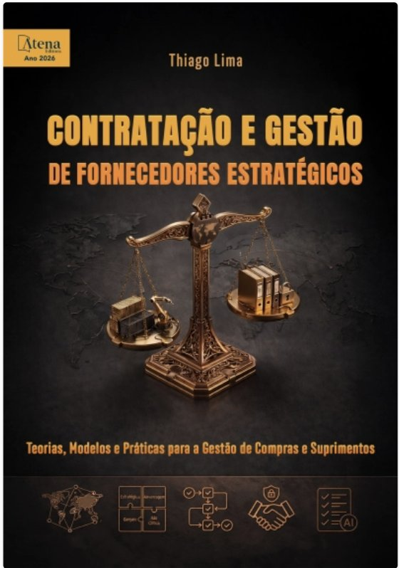

Parte 1 · Caso Whirlpool China: o motor de corrente contínua
⬇ Baixar este enunciado em PDF
01A situação
Leia o caso "Gestão Estratégica de Suprimento na Whirlpool China: Encontrando o Fornecedor Ideal" (Ivey/CEIBS), distribuído pelo professor.
Em resumo: a Whirlpool China vai lançar uma geladeira de alta eficiência energética em seis meses. Para isso, precisa trocar o motor de corrente alternada (CA) por um motor de corrente contínua (CC), uma tecnologia nova para ela. Gianluca Castelletti, chefe de compras internacionais para a Ásia, precisa encontrar o fornecedor certo a tempo, dentro das exigências de qualidade e das condições de pagamento da empresa.
A categoria que o grupo vai analisar é o motor CC.
02Dados para usar na análise
| Dado | Valor |
|---|---|
| Preço do motor CC | US$ 8 por unidade |
| Preço do motor CA atual | US$ 3 por unidade |
| Volume do novo modelo | 800 mil geladeiras por ano (1 motor cada) |
| Spend anual com motor CC | US$ 6,4 milhões |
| Custo a mais em relação ao motor CA | US$ 4 milhões por ano |
| Peso nas compras da Whirlpool na China (US$ 1 bilhão) | 0,64% |
| Peso no gasto direto global (US$ 8 bilhões) | 0,08% |
Preço, volume e spend são estimativas do professor, criadas para a atividade; não fazem parte do caso. As compras na China e o gasto direto global vêm do caso.
03Passo a passo na plataforma
- Na aba 📦 Categorias, cadastre a categoria "Motor CC" e o spend anual. Digite o spend em dólares (6.400.000): o rótulo "R$" da plataforma não altera a análise. Em fornecedores, cadastre os dois caminhos do item 04: "Fornecedor atual (motor CA)" e "Novo fornecedor de motor CC".
Como definir o valor para o negócio (eixo Y, de 0 a 100). Não olhe só o peso no gasto (0,64%). Considere também o impacto pontual no negócio: o que acontece se o motor faltar ou atrasar? Sem motor CC não há geladeira nova, e o caso diz que atraso no lançamento significa grande perda de vendas para a concorrência. Um item barato pode ter valor alto. Anote por que o grupo escolheu o número.
- Na aba ⚠️ Avaliação de Riscos, registre pelo menos três ameaças tiradas do caso, com probabilidade e impacto. Elas definem o eixo de risco da Kraljic.
- Na aba 📍 Matriz Kraljic, confira em que quadrante a categoria ficou.
- Na aba 🎯 Diagnóstico PCB, posicione o poder da Whirlpool (demanda) e o poder dos fornecedores (oferta). Façam o diagnóstico para cada um dos dois fornecedores: o equilíbrio de poder muda conforme o caminho escolhido.
- Na aba 🗂 Estratégias, selecione as alavancas que o grupo adotaria.
- Na aba 📄 Relatório PDF, escreva os nomes dos integrantes no campo "Grupo · integrantes", clique em Gerar Relatório e depois em Imprimir / salvar PDF.
Elas ficam recolhidas em "＋ Mais ferramentas". As seis abas da análise aparecem numeradas, e a plataforma mostra qual é o próximo passo.
O 📖 Guia Estratégico não precisa ser preenchido, mas vale consultar: ele resume a estratégia, o tipo de contrato e os riscos de cada quadrante da Kraljic.
04Os caminhos de fornecimento
Castelletti tem dois caminhos principais. Nenhum é a resposta certa: cada um troca um risco por outro. Use os fatos do caso para comparar.
| A · Desenvolver o fornecedor atual (motor CA) | B · Buscar um novo fornecedor de motor CC | |
|---|---|---|
| Ponto a favor | Já conhece a Whirlpool e já passou no sistema de qualidade. A Whirlpool tem equipes e orçamento para desenvolver fornecedores. | Já domina a tecnologia CC. |
| Ponto contra | Não domina motor CC. Aprender a tecnologia pode não caber em seis meses. | Precisa passar na auditoria (mínimo de 60 pontos; bons fornecedores locais ficam perto de 50), nos testes de amostra e aceitar as condições de pagamento. |
| Pergunta-chave | Dá tempo? | Ele passa na qualificação a tempo, e aceita as condições da Whirlpool? |
O grupo pode escolher um dos caminhos ou combinar os dois, desde que justifique.
05Perguntas que vamos discutir em sala
Não é preciso escrever as respostas. Preparem-se para defendê-las em sala, com base no que o grupo preencheu na plataforma.
- Em que quadrante da Kraljic o motor CC ficou, e por quê?O motor pesa menos de 1% do gasto. Como o grupo pesou o spend pequeno contra o impacto do motor no lançamento?
- Quem tem mais poder nessa negociação, a Whirlpool ou os fornecedores?Compare o PCB do fornecedor atual com o do novo fornecedor. Use fatos do caso.
- Qual caminho Castelletti deve seguir: A, B ou uma combinação dos dois?Justifique considerando o prazo de seis meses, a qualidade exigida e o risco de atrasar o lançamento.
- A Whirlpool exige que o prazo de pagamento só comece a contar quando as peças saem do estoque em consignação. Nessa categoria, vale manter essa exigência?Pense no que a Whirlpool ganha com isso e no que pode perder.
06Entrega
Um único arquivo: o Relatório PDF da plataforma, com o que o grupo preencheu nas abas: categoria e fornecedores, riscos, posição na Kraljic, diagnóstico de poder (PCB) e estratégias escolhidas. As perguntas do item 05 serão discutidas em sala.
Depois, siga para a Parte 2: o Exercício Whirlpool, em que vocês simulam o impacto financeiro de cada alavanca de compras.